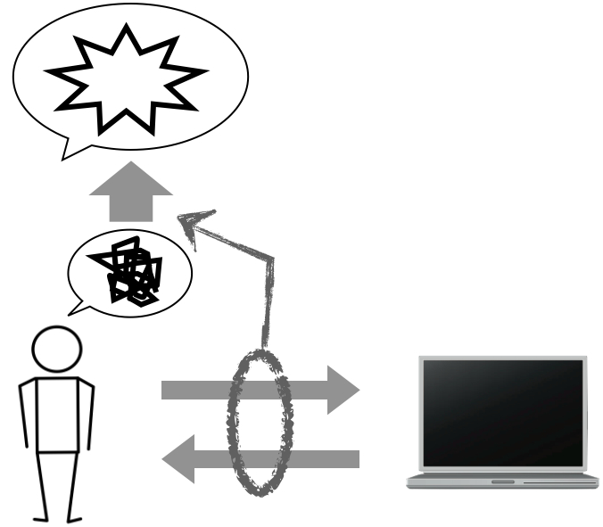

Keynote Speach 1
Designing Visual Interactivity for DataExperience and Engagement
Prof. Kumiyo Nakakoji
(Kyoto University, Japan)
Abstract
This talk presents some of our recent projects on the design of visual interactivity for users to make sense of data. Based on our knowledge interaction design framework, which supports, promotes, and amplifies the rhythm, process, and the momentum of people's creative knowledge work through fluent and graceful interactions, our approach explores the efficacy of visual interaction design to communicate data with users. The projects to be featured include DPS (Design Practice Streams), which allows users to re-experience recorded design meetings  by using a simple timestamp mechanism to relate the video data, digital whiteboard drawing data, and the textual transcribed utterance data, and SCIDViEW (Sense-Centric Interaction Design towards VIsually Experiencing Weight), which uses visual interaction to communicate weight, stiffness, or viscosity by exploiting pseudo-haptics in human-computer interaction design.
Kumiyo Nakakoji, Full Professor at Unit of Design at the Center for the Promotion of Interdisciplinary Education and Research in Kyoto University, received B.S. in computer science from Osaka University, Japan, in 1986, and M.S. in 1990 and Ph.D. in 1993, both in computer science from University of Colorado, Boulder, certified in Institute of Cognitive Science. While she has been working for Software Research Associates since 1986, she also held positions as Full Professor at Research Center for Advanced Science and Technology (RCAST), University of Tokyo, Japan, where she co-directed the Knowledge Interaction Design (KID) Laboratory (2002-2010), as Adjunct Associate Professor at Nara Institute of Science and Technology, Japan (1995-2002), and as Adjoint Assistant Professor at Institute of Cognitive Science, University of Colorado, Boulder, USA (1994-2002). She has served as chairs, editors, and members for numerous research committees, journals, conferences, and government funding agencies, in the fields of Human-Computer Interaction, Software Engineering, and Design and Creative Knowledge Work Support. She was awarded Distinguished Engineering Alumni Award from College of Engineering, University of Colorado, Boulder, in 2006.